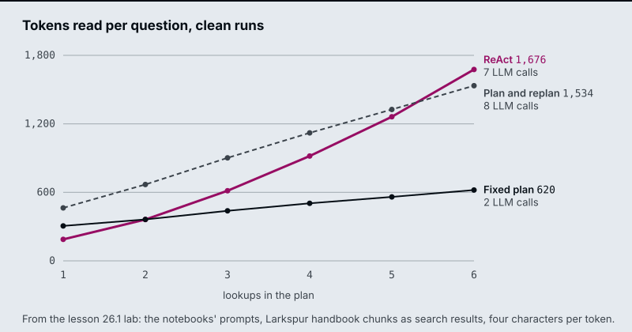

The running example is a Larkspur Cloud customer who wants to cancel an annual plan. The answer needs up to six handbook lookups: the refund rule, how long a refund takes, what happens to servers, how long data is kept, what an export includes, and how fast support answers. The lab plans and runs those lookups against the handbook chunks M11 to M13 use, and lesson 26.4 verifies a drafted answer against the same chunks.
TL;DR
- A fixed plan makes 2 LLM calls (planner and synthesizer) however many lookups it holds. ReAct makes one per search plus one to answer, and each call re-reads the conversation so far. On the lab’s four-lookup question that is 2 calls and about 504 tokens against 5 calls and about 918.
- A fixed plan cannot notice a wrong search result; it writes the answer from it. Evaluating every step and replanning on a failure raises the cost to 8 LLM calls when one of the four lookups comes back wrong, and it is the planner whose answer is still complete.
- A loop that can replan needs a cap, and
max_iterationscounts executed steps, retries included. Six lookups with one retry need 7; the notebook’s cap of 6 leaves one lookup unanswered. - Chain-of-verification answers one question per claim in a fresh call that never sees the draft, then revises. It costs 1 + 1 + N + 1 calls and removes unsupported claims; it does not add missing ones.
- Self-consistency, tree of thoughts and LATS spend extra calls on several reasoning paths. They pay off only when something can score a partial answer: the evaluator decides what survives.
Mental model
- A customer cancelling a Larkspur annual plan asks four things at once.
- The planner lists four lookups in one LLM call, before any search runs.
- The first search, for the refund rule, returns the refund-timing chunk.
- The evaluator rejects it: the result answers a different question.
- The replanner rewrites that lookup from the reason it failed and keeps the other three.
- The rewritten search returns refund-window, and the remaining lookups pass their checks.
- The synthesizer writes from accepted results only. The lab counts 8 LLM calls and 5 searches for this run.
- Each claim in the draft is checked in a fresh call that cannot see the draft (lesson 26.4), then the answer goes out.
Every box is a place to spend an LLM call, and each one buys a different guarantee. The plan makes the work visible before it runs, the check stops a wrong result from reaching the answer, and verification catches claims the draft invented. ReAct folds plan, execute and check into one call per step. Tree search (lesson 26.6) replaces the single Execute box with several candidate steps and an evaluator that keeps the best.
Plan-and-execute
Lesson 26.1: Plan-and-execute vs ReAct; decompose, execute, replan. Notebooks: 01a_planning_react_vs_plan.ipynb, 01b_planning_decompose_execute_replan.ipynb
A ReAct agent loops agent → tools → agent and decides each next step after reading the last result. A plan-and-execute agent decides all the steps first. Notebook 01a builds it as three nodes:
| Node | What it does | LLM calls |
|---|---|---|
| Planner | One structured-output call returns Plan.steps, a list of search queries, one fact each |
1 |
| Executor | Pops the next query and runs the search tool | 0 |
| Synthesizer | Reads every collected result and writes the answer, including any arithmetic | 1 |
One pure router drives the loop: after planning and after every execution it asks whether the plan is empty. Because each step is a plain query, the executor needs no LLM, so the agent makes 2 LLM calls whatever the plan’s length. ReAct makes one call per search plus one to answer, and each call re-reads the whole conversation, every earlier result included.
flowchart LR
P["Planner<br/>1 LLM call"] --> E["Executor<br/>search, no LLM"] --> D{"Plan<br/>empty?"}
D -- no --> E
D -- yes --> S["Synthesizer<br/>1 LLM call"]
The notebook also shows what ReAct’s adaptivity costs in reliability. On its three-capitals task, the ReAct agent stopped after the capitals in 4 of 4 runs, writing “Next, I will find the current population of the United States” as text instead of a tool call. tools_condition ends the loop on any turn without a tool call, so the promised search never ran. ReAct keeps its to-do list in the model’s head; the planner wrote the missing lookup into its plan before the first search.
The interactive lab runs the same comparison on the Larkspur cancellation question, with the notebooks’ own prompts and handbook chunks as search results. On clean runs, with no wrong results:
| Lookups | ReAct calls | ReAct tokens | Fixed plan calls | Fixed plan tokens |
|---|---|---|---|---|
| 2 | 3 | ~362 | 2 | ~363 |
| 4 | 5 | ~918 | 2 | ~504 |
| 6 | 7 | ~1,676 | 2 | ~620 |

At two lookups the two agents read about the same; at six, ReAct reads 2.7 times as much, because its prompt grows with every result and it pays for that prompt on every call. Wall time is a different matter: in notebook 01a the searches dominate it and the executor runs them one after another, so it can go either way from run to run.
Use a plan when the steps are knowable from the question, as in “find these four facts and compare them”. Use ReAct when the next step depends on what the last one found, as in troubleshooting. The plan’s weakness is the reverse of its strength: it was fixed before the first search, and nothing in the graph checks a result.
Replanning
Notebook 01b treats the plan as a living document. After every step an evaluator asks one structured question, StepEvaluation.satisfied: does this result state the fact the step asks for, about the right entity? The verdict and a one-sentence reason go into state, and pure routers read them:
flowchart TD
P[Plan] --> X["Execute next step<br/>then evaluate it"]
X --> CAP{"iterations at<br/>max_iterations?"}
CAP -- no --> OK{"Step<br/>satisfied?"}
OK -- no --> RP["Replan from history<br/>and the reason"]
RP --> X
OK -- yes --> MORE{"Steps<br/>left?"}
MORE -- yes --> X
MORE -- no --> S[Synthesize]
CAP -- yes --> S
Three rules make the loop safe:
- Replanning is not retrying. The replanner sees the goal, the history of OK and INSUFFICIENT steps and the reason the last one failed, and writes a new list of remaining steps. It is told never to resubmit a failed step unchanged.
- Only accepted results reach the answer. The synthesizer gets the satisfied results as data and is told to say a fact could not be found rather than fill it in from memory.
- A cap ends the loop.
max_iterationscounts executed steps. The router checks it before the verdict, so a run at the cap goes straight to the synthesizer.
In the notebook, a stub search returns the U.S. state of Georgia for a question about the country. The evaluator marks the step INSUFFICIENT, the replanner rewrites the query, and the next result is accepted. A fixed plan would have popped the step and written the state’s 11 million into the country’s row. A dead search tool, which never finds anything, runs until the cap and returns an honest “not found”.
The lab adds a wrong first result to the Larkspur question: the search for the refund rule returns the refund-timing chunk. With four lookups:
| Agent | LLM calls | Searches | Tokens read | Answer |
|---|---|---|---|---|
| ReAct, at its best | 6 | 5 | ~1,211 | Complete |
| Fixed plan | 2 | 4 | ~500 | One wrong fact |
| Plan and replan | 8 | 5 | ~1,582 | Complete |
The replanner’s bill follows from its graph: 1 planner call, 1 evaluator call per executed step, 1 replanner call per rejected step and 1 synthesizer call, so N + 2 + 2f calls for N lookups and f wrong results under the cap. On a clean run that is N + 2, one more than ReAct, and the extra machinery changes nothing. The evaluator is the bottleneck: too lenient and wrong data slips through, too strict and the agent replans good results.
The cap needs the same arithmetic. Six lookups with one wrong result need 7 executed steps. At the notebook’s max_iterations = 6, the lab’s run stops with one lookup unanswered after 9 LLM calls; at 7 it completes in 10. ReAct has its own ceiling: notebook 01a runs it with recursion_limit = 20 graph steps, and each search costs two (an agent turn and the tool). Six lookups with four wrong results need 10 searches and 21 steps, so LangGraph raises GraphRecursionError and the user gets no answer.
The lab’s models are scripted, so its numbers are exact for these prompts and chunks but not for a live model: a real ReAct agent may stop early, as in notebook 01a, and a real replanner may need more than one rewrite. Its numbers match the notebooks’ own node and router code run under LangGraph with the same scripted models on all 1,764 settings.
Check yourself
1. Why does the plan-and-execute agent make two LLM calls whatever the length of its plan?
The planner writes every step as a plain search query in one structured-output call, the executor runs each query with no LLM, and the synthesizer makes the one call that writes the answer. ReAct makes one call per search plus one to answer, and each call re-reads the whole conversation.
2. On clean runs with six lookups, how many tokens does ReAct read compared with the fixed plan, and why the gap?
About 1,676 against about 620, 2.7 times as much. ReAct’s prompt grows with every result and it pays for that prompt on every call. At two lookups the two read about the same (about 362 and 363).
3. A replanning run with six lookups and one wrong result stops with one lookup unanswered. What caused it, and what fixes it?
The cap: max_iterations = 6 counts executed steps, and six lookups with one wrong result need 7. The run stops after 9 LLM calls; at 7 it completes in 10. Size the cap from N + 2 + 2f calls for N lookups and f wrong results.
Chain-of-verification
Lesson 26.4: Chain-of-verification and constitutional critique. Notebooks: 04a_chain_of_verification.ipynb, 04b_constitutional_ai_critique_loop.ipynb (optional)
Reflection (lesson 26.3) asks the model to re-read its own answer. If the model did not know a fact was wrong the first time, re-reading rarely shows it: the draft sits in the prompt and the model agrees with itself. Chain-of-verification (CoVe; Dhuliawala et al., 2023) checks claims in calls that cannot see the draft.
- The draft answers a cancelling customer in one pass and makes three claims.
- The planner writes one self-contained question per claim.
- Each question goes to its own call. The draft is not in the prompt.
- Each call retrieves its handbook chunk: refund-window, refund-timing and retention.
- Two claims disagree with their chunks: a full refund needs under 100 GB of outbound traffic, and data is kept 30 days, not 90.
- The reviser sees the draft next to the answers for the first time and fixes those two claims.
Notebook 04a runs the four steps with structured output at each one:
- Draft. Answer in one pass. The notebook asks for 8 U.S. presidents born in Ohio when only 7 exist, so the model has to pad the list.
- Plan.
VerificationPlan.questionsholds one atomic, self-contained question per claim. Say what to verify: a prompt that only asked for “one question per factual claim” produced “Who was the 18th President?”, which checks a claim nobody doubted. Tying each question to the property the user asked about (“born in Ohio” becomes “Where was X born?”) fixed it. - Verify. Each question goes to its own call with no draft, no other questions and no earlier answers. The calls are independent, so the notebook runs them as one
batch. - Revise. Only now does the model see the draft next to every (question, independent answer) pair. It returns
final_itemsandcorrections_made, and code scores both lists against the ground truth.
The notebook’s findings set the limits:
- It raises precision, not recall. CoVe checks the claims that were made. A president the draft left out is still missing after revision.
- The reviser can add errors. In one run it removed Rutherford B. Hayes, whose verified birthplace is “Delaware, Ohio”, apparently reading Delaware as the state. Its own
corrections_madecalled that a fix; only the scoring in code exposed it. - It is bounded by what the verifier knows. If the model answers the narrow question wrongly too, CoVe agrees with the draft.
- It costs 1 + 1 + N + 1 calls for N claims, against 1 for the draft alone.
- It must leave a correct answer alone. The notebook’s second run asks for 5 presidents born in Virginia, where 8 exist and the draft is usually right.
In a RAG system the third limit is the one to remove: answer each verification question from retrieved chunks, not from the model’s memory. That is the M26 lab brief, applied here to a hand-written Larkspur example. A customer cancels an annual plan 20 days after buying it, and the draft answer makes three claims:
| Draft claim | Verification question | What the retrieved chunk says | Verdict |
|---|---|---|---|
| You get a full refund, because you are within 30 days | What are the conditions for a full refund on a Larkspur annual plan? | refund-window: within 30 days, if the account used less than 100 GB of outbound traffic |
Fix |
| The refund appears in 5 to 10 business days | How long does a Larkspur refund take to appear? | refund-timing: 5 to 10 business days |
Keep |
| Your data is kept for 90 days after cancelling | How long is data kept after a Larkspur plan is cancelled? | retention: 30 days, then permanently deleted |
Fix |
The revised answer adds the traffic condition to the first claim and changes 90 days to 30 in the third. Each verification question is self-contained (“a Larkspur annual plan”, not “the plan”), so retrieval for it works without the draft, and each correction traces to one question and one chunk. To measure it on a golden set, count claims per answer that no retrieved chunk supports, before and after, and count the correct claims the reviser removed as a separate number. A drop in the first with a rise in the second is the Hayes failure at scale.
The optional notebook 04b runs the same draft, critique and revise loop against a written constitution: each named rule gets its own structured verdict (rule, passes, critique), only the failing rules go back to the reviser, and MAX_ITERATIONS bounds the loop. The notebook labels it a teaching pattern, not a safety system.
Check yourself
1. Why does chain-of-verification answer each verification question in a call that cannot see the draft?
If the model did not know a fact was wrong the first time, re-reading rarely shows it: with the draft in the prompt, the model agrees with itself. A fresh call with no draft, no other questions and no earlier answers checks each claim on its own.
2. A customer cancels an annual plan 20 days after buying it, and the draft promises a full refund and 90 days of data retention. What does the revised answer change?
It adds the condition from the refund-window chunk: a full refund within 30 days only if the account used less than 100 GB of outbound traffic. It changes 90 days to 30, then permanent deletion, from the retention chunk. The claim that the refund appears in 5 to 10 business days is kept.
3. After adding verification, unsupported claims per answer fall, but the count of correct claims removed rises. What is happening?
The reviser is adding errors, as when it removed Rutherford B. Hayes, whose verified birthplace was “Delaware, Ohio”, and its own corrections_made called that a fix. Only scoring in code against the ground truth exposes it, which is why the removed correct claims are counted as a separate number.
Tree of thoughts / LATS
Lesson 26.6: Self-consistency, tree of thoughts and LATS. Notebooks: 06a_self_consistency.ipynb, 06b_tree_of_thoughts.ipynb, 06c_lats.ipynb (optional)
A single chain of thought is one sample from many possible reasoning paths. The three notebooks spend extra LLM calls on more paths, each in a different place:
| Pattern | Where the extra calls go | What picks the answer | Fails when |
|---|---|---|---|
| Self-consistency (Wang et al., 2022) | N whole answers to the same prompt at temperature above 0 | A majority vote over the final answers | The error is systematic: the samples agree on the same wrong answer |
| Tree of thoughts (Yao et al., 2023) | Several proposed next steps from every state, level by level | An evaluator scores each state; the best BEAM survive |
The evaluator prunes the state that leads to the solution |
| LATS (Zhou et al., 2024) | One leaf at a time, chosen by Monte Carlo tree search | Rewards backpropagated to the root, plus lessons from dead ends | The value model misleads selection |
Self-consistency needs short, comparable answers (a number, a label) and nothing else. Notebook 06a has both cases. On the sum of all digits from 1 to 100 the wrong answers were scattered, which a vote washes out; on three-digit numbers whose digits add up to 10, most wrong answers were the same number, 55, which a vote locks in. High agreement is a cheap confidence signal, but consistent is not the same as correct.
Tree of thoughts (ToT) spends its calls on intermediate steps instead. Notebook 06b uses the Game of 24, the benchmark from the ToT paper: combine four numbers with + - * / to make 24. A state is the numbers still in play; a thought is one move. Four pieces make the search:
- Rules in code. Moves are applied with exact fractions, so an illegal or mis-computed proposal is dropped and the tree holds only legal states.
- A proposer. The LLM, at temperature 0.7, suggests up to
PROPOSALS = 8moves per state. - An evaluator. With three numbers left, an LLM at temperature 0 judges
sure,likelyorimpossible(scores 3, 1, 0). With two left, code checks the six operations exactly. Where code can decide it should: while prototyping, an LLM judged[4, 24]assurebecause 24 was in the list. - Beam search.
expand → evaluatein a LangGraph loop keeps the bestBEAM = 5states per level, and a pure router stops at a solution, an empty frontier or the depth limit.
The notebook reports that in its runs single-pass CoT solved between a twentieth and a quarter of the samples, while ToT solved about half of the eight puzzles at roughly 10 to 15 LLM calls per puzzle. Every ToT solution is valid by construction, and every failure is an evaluator failure: the solving state was scored impossible and pruned, or never proposed.
LATS replaces the level-by-level beam with Monte Carlo tree search, one leaf per iteration:
flowchart LR
S["Select a leaf<br/>by UCB1"] --> E["Expand<br/>up to K moves"]
E --> V["Evaluate<br/>code or LLM"]
V --> B["Backpropagate<br/>reward to the root"]
B --> F{"Solved?"}
F -- no --> L["Reflect on<br/>dead ends"]
L --> S
F -- yes --> A[/Solution/]
Selection walks down from the root, at each level taking the child with the best average value plus an exploration bonus:
UCB1(child) = child.value / child.visits + c * sqrt(ln(parent.visits) / child.visits)
An unvisited child scores infinity, so every child is tried once. Notebook 06c sets c = 1.4, K_CANDIDATES = 4, MAX_ITERATIONS = 10 and rewards of 1, 0.33 and 0 for sure, likely and impossible. A node whose children all died gets one more expansion (MAX_EXPANSIONS = 2) with the latest reflections in its prompt, then is pruned for good. Each dead end becomes a one-sentence lesson that later proposals read, which is Reflexion (lesson 26.3) used inside a search.
On these eight puzzles LATS did not win: the notebook reports it solved 2 to 4 of 8, the ToT beam about 4, and LATS spent more LLM calls. Its solved runs finished in two or three iterations, because it stops at the first success. LATS was designed for problems with a larger branching factor and a better value model.
For a Larkspur support assistant most questions have one good path, and lessons 26.1 and 26.4 are the tools to reach for. Reach for these patterns when one path is not reliable enough and something can score a partial answer: a code check, a test suite, or a judge you have measured. Without that evaluator, more branches only multiply the calls.
Check yourself
1. When does a majority vote over sampled answers fail to fix a wrong answer?
When the error is systematic and the samples agree on the same wrong answer. On three-digit numbers whose digits add up to 10, most wrong answers were 55, which a vote locks in; on the sum of the digits from 1 to 100 the wrong answers were scattered and the vote washed them out. Consistent is not the same as correct.
2. In the Game of 24 search, an LLM evaluator judged the state with 4 and 24 left as sure. What should judge two-number states instead?
Code. With two numbers left, the notebook checks the six operations exactly, because where code can decide, it should. The LLM said sure only because 24 was in the list.
3. Should Larkspur's support assistant answer handbook questions with tree of thoughts or LATS?
Usually not. Most of its questions have one good path, and plan-and-execute or chain-of-verification fit them. Reach for these search patterns only when one path is not reliable enough and something can score a partial answer: a code check, a test suite or a judge you have measured. Without that, more branches only multiply the calls.
Interactive lab
Plan or react: the call budget: open the file in a browser. Clear the wrong-result toggle and slide the lookups from 1 to 6: the fixed plan stays at 2 LLM calls while ReAct’s tokens climb past the replanner’s at six. Then press lookup 1 again and compare the three answers. Finally set six lookups, keep one wrong, and drop the cap from 7 to 6 to see a lookup go unanswered.
How it connects
- Before: M23 and M24 build the agent loop and ReAct that this module measures against. In M25’s workflow patterns (prompt chaining, routing, parallelization, orchestrator and worker, evaluator and optimizer) you draw every step; from this module on, the model writes part of the control flow.
- Next: M27 adds human approval before an agent acts. M18’s query decomposition is a plan for retrieval, and M29’s Self-RAG checks a generated answer for groundedness in the retrieved evidence, the RAG form of the verify step.
Interview Spotlight: 5 Questions You Might Get Asked
Production questions in the style of OpenAI, Anthropic and Google interviews for applied AI roles.
1. Larkspur’s cancellation assistant, a plan-and-execute agent, told a customer their data is kept for 12 months after cancelling. The handbook says 30 days. The trace shows the retention lookup ran. What went wrong, and what do you change?
What a strong answer covers:
- Reads the trace: the retention search returned the promotional-credits chunk (“expire 12 months”), and a fixed plan pops every step as done whatever it returned
- Adds a per-step evaluator that asks whether the result states the requested fact about the right subject, writes the verdict to state, and routes a failure to a replanner
- Passes only accepted results to the synthesizer and tells it to say a fact was not found rather than fill it in
- Reproduces the failure with a stub search that returns the wrong chunk on the first call, and adds the question to the golden set
2. The team is choosing between ReAct and plan-and-execute for two Larkspur assistants: one answers multi-part billing questions, the other troubleshoots a server that will not start. Which pattern goes where?
What a strong answer covers:
- Billing questions have lookups you can list up front, so a plan is cheaper (2 LLM calls) and inspectable before any search runs
- Troubleshooting is exploratory: the next check depends on the last result, which is what ReAct’s per-step reasoning is for
- Names ReAct’s failure from lesson 26.1: it can announce its next step as text and end, because nothing tracks what is left
- Suggests a middle ground for either: plan, execute, evaluate each step and replan, at N + 2 calls on a clean run
3. After adding replanning, the cost per question went up and the team wants to know whether it is paying for itself. What do you measure?
What a strong answer covers:
- Logs per run: planned steps, executed steps, rejected steps, replans, cap hits and LLM calls, from state rather than from prompts
- Tracks the replan rate and the share of rejected results that were really wrong, by sampling and labelling evaluator verdicts
- Compares answer completeness on the golden set with and without replanning, and the calls each extra complete answer cost
- Watches cap hits as their own alert, since a run that hits the cap returns a partial answer
4. A customer question needs six lookups, and the replanning agent runs with max_iterations = 6. On a day when one search returns the wrong chunk, one part of the answer goes missing. Why, and how should the cap be set?
What a strong answer covers:
- The cap counts executed steps, and a rejected step plus its retry is two executions: six lookups with one retry need seven
- The router checks the cap before it checks the verdict, so the run goes to the synthesizer with one lookup unanswered
- Sets the cap from the plan: planned lookups plus the retries you will pay for, or a per-step retry limit
- Keeps the honest fallback: the synthesizer reports the missing fact, and the response says the answer is partial
5. You add chain-of-verification to the RAG answer step, as the M26 lab brief asks. Unsupported claims fall on the golden set, but a reviewer finds one correct claim was removed. How do you evaluate and guard this?
What a strong answer covers:
- Scores before and after in code against labelled claims, counting removed correct claims as well as removed unsupported ones
- Expects precision to rise and recall not to: CoVe checks the claims that were made and adds none
- Answers verification questions from retrieved handbook chunks rather than the model’s memory, and checks the reviser’s output instead of trusting its list of corrections
- Reports the cost of 1 + 1 + N + 1 calls per answer and batches the N independent calls to hold latency
Key Takeaways
- Plan when the steps are knowable up front; react when the next step depends on the last result. Count LLM calls and tokens for both on your own questions before choosing.
- A plan is only as safe as its check. Evaluate every step’s result, replan from the reason it failed, and send only accepted results to the answer.
- Any loop that can grow needs a cap, set from planned steps plus allowed retries, and a fallback that says what is missing.
- Verify claims in calls that cannot see the draft, and spend tree search only where an evaluator can tell a good partial answer from a bad one.